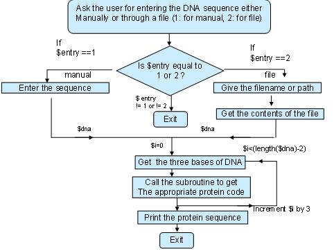

The mark for each lab is posted in this page. If you have any problems about the marks of the labs, please contact us as soon as possible.
Advances in high-throughput biology have transformed modern biology into an incredibly data-rich science. Biologists who never thought they needed computer programming skills are now finding that using an Excel spreadsheet is simply not enough. Programming is needed for tasks such as comparing the similarity or finding some regulatory patterns in DNA sequence.
Here is an comprehensive answer.
An international association of developers of open source Perl tools for bioinformatics, genomics and life science research.
A basic introductory course for biologists to learn the essential aspects of the Perl programming language.
An introduction to perl for biological use.
Remember: You have to change the file permissions to run shell scripts!
A nucleic acid sequence (or DNA sequence) is a succession of letters that indicate the order of nucleotides within a DNA. The possible letters are A, C, G, and T, representing the four nucleotide bases of a DNA strand - adenine, cytosine, guanine, thymine. In the typical case, the sequences are printed abutting one another without gaps, as in the sequence AAAGTCTGAC.
In molecular biology and genetics, translation is the process in which DNA sequence create proteins. More specifically, the DNA sequence is grouped into tri-nucleotide units called codons, each coding for a single amino acid according to the DNA codon table.
The objective of the program is to read the DNA from a file or through a manual entry and convert the DNA string into a protein string. For example, the DNA sequence TCATCA should be translated to protein sequence SS. The detailed requirement please refer to the following flow chart:

Example:$ ./dna2prot.pl Please choose one of the following for entering the DNA sequence Press 1 for manual entry or 2 for file 1 enter the sequence:- TCATCA The protein is:- SS The length of the protein is:- 2
$ ./dna2prot.pl Please choose one of the following for entring the DNA sequence Press 1 for manual entry or 2 for file 2 enter the filename(if it is in another folder please specify the path) pfile.txt The protein is:- SSSTQVTH_NQSVRSFGSRAQSSSVPTRSPPADTMVQWTAEEKQLTTGLWGKVNVAECGGEALARLLTVYPWTQRFFASFGNLSSPTAVLGNPKVQAHGKKVLTSFGEAVKNLDSTKNTFSQLSELHCDKLHVDPENFRLLGDTLVVVLAAHFGKDFTPDCQAAWQKLVRVVAHALARKYH_GAAGAPGSARTRCRPSPPLLTANKAHPVKPKKKKKNTLG The length of the protein is:- 221
Method:
Use a subroutine which translates the three letter codon of DNA to the respective protein value. The subroutine contains a hash variable which stores the protein values with their respective DNA codon.
So when the subroutine gets a codon, the codon is checked if the particular codon exists in this hash variable. If it exists it returns the protein value else it prints the error occurred. So at the end the subroutine returns either
the protein value or the error Ans:dna2prot.pl.
AP_000081 181 AP_000174 104 AP_000138 1451. Check if each line follows the standard form: "XXX...XXX ddd...ddd", where "XXX...XXX" stands for any character/digit string and "ddd...ddd" stands for any digit string, (note there is at least one blank space between them). If not, die with a warning.
prtn1.txt: AP_000081 181 AP_000174 104 AP_000138 145
prtn2.txt: AP_000081 181 AP_000174 105 AP_000131 145
$ ./lab7.pl prtn1.txt prtn2.txt AP_00081 AP_00174 appears with different length!
prtn1.txt: AP_000081 181 AP_000174 104 AP_000138 145
prtn2.txt: AP_000081 181 AP_000174 105 AP_000131 145
$ ./lab7.pl prtn1.txt prtn2.txt bad line format in prtn1.txt line 1!
Please submit your lab7.pl file using CASS on or before 10:00 pm, Saturday (04-April-2015).
Any inquiry please contact your TAs by email (hzhangan@cse.ust.hk)